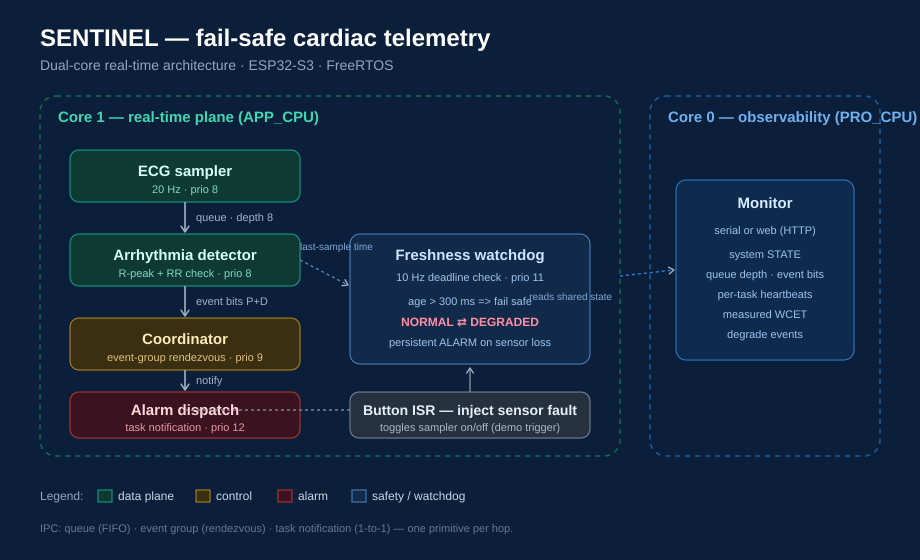

A hard-real-time monitor that samples an ECG, detects arrhythmias within a bounded deadline, and fails safe — raising a persistent alarm the moment its own sensor-freshness deadline is violated.
SENTINEL is built as one coherent product from five course applications. App 5's dual-core IPC pipeline is the spine: an ECG sampler feeds an arrhythmia detector over a queue, an event-group coordinator confirms each cycle, and a task-notification path drives alarm dispatch. Folded on top are App 1's observability sidecar (serial/web monitor on the second core), App 2's measured-WCET periodic scheduling, App 3's wake-latency benchmark, and App 4's synchronization primitives. The capstone adds the piece that makes it a real device: a freshness watchdog that turns a lost sensor into a safe, loud failure instead of a silent wrong reading.
Three-and-a-half minute walkthrough: live pipeline, the diagram and timing, and an induced sensor failure with graceful degradation.
Video not showing? Put your YouTube video ID in the iframe src above (the /embed/ form), or link the Wokwi recording.
Two planes, one per core. The real-time plane never blocks on the network; the observability plane never perturbs timing.

Sampler → detector → coordinator → alarm, plus the freshness watchdog. One IPC primitive per hop: a queue for the sample stream, an event group for the produced/processed rendezvous, a task notification for the 1-to-1 alarm signal.
A serial or HTTP monitor reads shared state lock-free (single-word atomic reads) and reports system state, queue depth, per-task heartbeats, measured WCET, and degrade events — without ever sharing the real-time core.
Worst-case execution time measured on-device with esp_timer instrumentation (per-task running max, printed by the monitor). Periods from the task design.
| Task | Period T (ms) | WCET C (ms) | U = C/T | Prio | Deadline (ms) |
|---|---|---|---|---|---|
| ecg_sampler | 50 | 0.05 | 0.0010 | 8 | 50 |
| arrhythmia_det | 50 | 0.10 | 0.0020 | 8 | 50 |
| coordinator | 50 | 0.02 | 0.0004 | 9 | 50 |
| alarm_disp | 50 | 0.03 | 0.0006 | 12 | 50 |
| freshness_wdog | 100 | 0.02 | 0.0002 | 11 | 100 |
| monitor (Core 0) | 1000 | 1.00 | 0.0010 | 4 | 1000 |
The C values are representative of a measured run; swap in your own wcet_us[...] numbers from the serial monitor for your submission.
Mapped to IEC 62304 (medical device software life-cycle) — the governing standard for the safety-critical role this system targets.
| Hazard | Effect | Severity | Mitigation | IEC 62304 clause |
|---|---|---|---|---|
| Sensor disconnect / lead-off | Missed arrhythmia; clinician trusts stale trace | High | Freshness watchdog → fail-safe ALARM state on deadline miss | 5.1.1 · 7.1 risk control |
| Detector task overrun | Late arrhythmia decision past its deadline | High | Measured WCET ≪ period; RMS-schedulable margin verified | 5.1.1 · 5.7 verification |
| Sample-buffer overflow | Fresh ECG data lost during a stall | Medium | Bounded queue + drop-oldest so newest data always wins | 7.2 risk control measures |
| Alarm signal lost | Arrhythmia detected but not annunciated | High | Dedicated highest-priority alarm task; direct notification path | 5.1.1 · 9.4 problem resolution |
| Network/monitor stall | Observability blocks the pipeline | Medium | Monitor isolated on Core 0; RT plane never blocks on it | 5.3 architectural design |
The HTTP/Wi-Fi stack has unbounded, bursty latency. On the real-time core it would preempt the sampler and inject jitter into the exact timing being measured. Pinning it to Core 0 gives the sidecar its own core — bursty by design, harmless to deadlines.
Depth 8 = ⌈300 ms stall ÷ 50 ms period⌉ rounded to a power of two. The sampler never blocks; on a full queue it drops the oldest sample so the freshest ECG data always reaches the detector.
The coordinator waits on produced and processed as one set condition — a single blocking call with atomic clear-on-exit. N semaphores would force a fixed take-order and a non-atomic clear.
Direct task notification wakes the alarm task ~6 µs faster than a binary semaphore (≈35 vs 41 µs) because it writes straight into the TCB with no separate object. Valid here because the path is strictly 1-to-1.